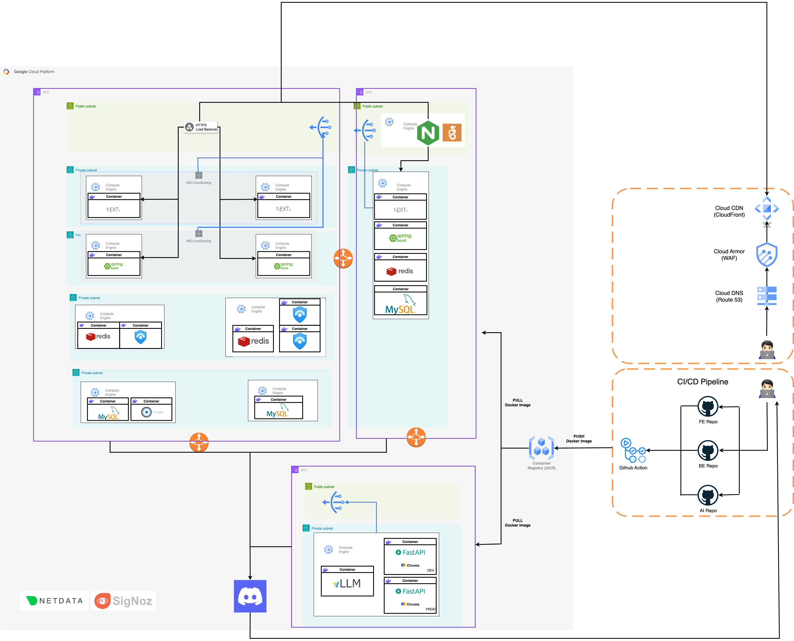

Architecture Evolution
Phase 1: PM2 Manual Deployment
Initial MVP deployment on a single GCP VM using PM2 for process management with manual deployment workflow.

Phase 2: Docker + GitHub Actions
Containerized all services using Docker with automated CI/CD pipeline through GitHub Actions.

Phase 3: AWS EKS + ArgoCD GitOps
Full Kubernetes orchestration on AWS EKS with GitOps-based deployment using ArgoCD for declarative infrastructure management.